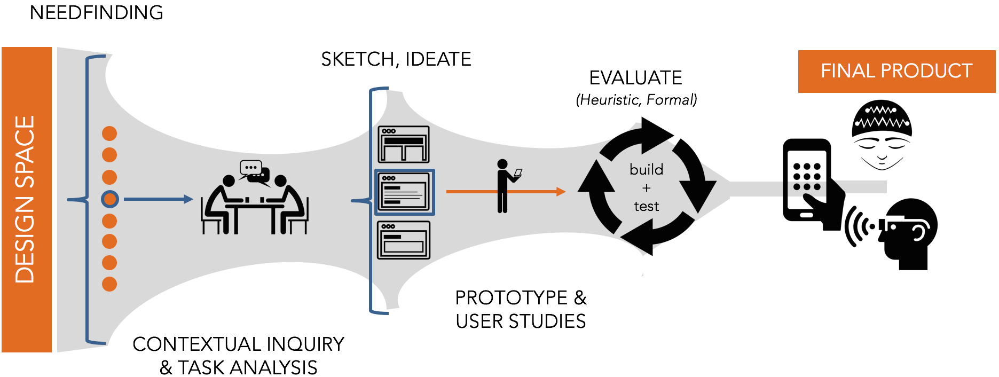

Documenting Your Design Process
At the conclusion of each design sprint, you and your team will construct a public facing document that presents your process and outcome. This will consist of:
-
A post on Medium.com. You may choose to make this a private or public link. However, I am hoping to choose the 2 or 3 consensus favorite outcomes of each assignment and make them public on the Bucknell HCI Medium account. You should paste your link on the wiki of our course
-
Embedded in your post, a demo video that shows interaction with your technology, highlighting the key design decisions that you made. This will likely require you uploading your video to a public service (such as YouTube). Note: Some of your assignments may NOT require a video. Read the instructions carefully.

Why do I have to do this?
In May 2017, I sat down with a design researcher from Google to talk about what they look for in job applicants. She was frustrated with the applications being sent their way - “I just see images of the final product! I don’t have any understanding of the process they used to get there. What did they do?”
Introducing new technology at the scale of Google (millions of people) is a risky proposition. Small misconceptions can go wrong very quickly. In that environment, it is critical to not only create a good product, but be able to articulate the decisions you made along the way.
This requirement is to make my Google friends happy - you will be creating public-facing design documents that accompany each of your design sprints. If you do it well, these documents are invaluable to future employees to understand the kind of employee that they will potentially hire. More importantly, it forces you to justify your own decisions within the context of people - not just program functionality.
What should be in my design reflection?
Start with a one-paragraph summary. This should highlight what your design objectives were and what you created. If someone refuses to read a word of your post beyond this first paragraph, they should still have the gist of what tried to create.
The majority of your post should clearly walk through and reflect on the design stages that you went through to arrive at the final prototype. At each stage, include some form of evidence - a video/photo of you testing your app with users, photos of the sketches you made to brainstorm your app context, a gif of some interaction you were testing out… anything!
By the conclusion of your post, you should have broadly addressed the following questions:
- What worked? What didn’t work?
- What options did you explore?
- How did you test those options?
- How did you decide on the results?
- What was the final result?
- Looking at your final prototype, what are its strengths? What are its weaknesses? What would be improved upon if you had more time?
These kind of questions are frequently cited as the critical pieces that companies want to see: here is another blog post on the topic. In some assignments, I will explicitly ask you to focus on one step of the design process. In that case, you should
For a more concrete example, this can serve as an target for what you should shoot for (although it is longer than what you need): Designing Facebook Collage
You should have a conclusion paragraph. This wraps up and summarizes your post.
What does a good post consist of?
Writing a good post for a broad audience is not the same as writing a reflection or paper for a class at Bucknell. Carefully reflect on the content, language, and visual design of your post.
Visually, what does a good post look like? Visit some blogs and scroll through the posts without even reading the content. Despite a lack of content, you are already making judgments about whether this wall of text is worth reading. How are you making these judgments? What is it based on?
Some examples of blog posts that I believe do a nice job discussing the design process:
-
How to design a robust chatbot interaction: While this is significantly longer than your reflections need to be, notice the pacing of the article - subheadings, links, lists, quotes, images, etc.
-
Our Product Design Process: This post is image heavy, but notice how it sections a potentially long document into easily digestible chunks.
-
Peek Inside a Facebook Design Critique: While most of the content of this post is a long conversation, notice how they visual design keeps it interesting. The pacing is broken up by example images and quotes, followed by a nice summative reflection at the conclusion.
In each of the previous posts, consider how there is never a long block of text. They are transformed into shorter, punchier paragraphs. Also notices how you never see a long string of paragraphs back-to-back. They are always broken up by subheadings, lists, or images to help readers visually parse through the information. Your posts should do the same. There is no reason why your work shouldn’t look as professional in presentation as the ones above.
Tips for the process
Document, Document, Document! Take pictures, record audio, and make videos every step of the way. From early ideas all the way to final prototypes. These will be critical for writing your design documents. Note that many of these assignments from a technical perspective could be tackled individually. Part of the reason that I am forming teams is to increase the bandwidth each group has to spend on reflections like this.
While the post should be a group initiative, it is useful to identify someone in your team to document your design process ALONG THE WAY and begin writing the framework of your post. The important bit here is that you are considering your reflection through the entire design process, not just at the end.
Demo Video
The interactions that you build will break over time, but demo videos last forever. In that spirit, somewhere in your design post, you should have a demo video that that demonstrates the core interactions of your interface. By the end of the video, it should be clear what the primary functions of your app are. In most cases, these videos should last no more than 1 minute.
What is a good video?
Good videos have good visuals and good sound. The advice seems obvious, but the number of submissions that I see every year with blurry input and the soundscape of a wind tunnel tells me that these ideas need to be reinforced.
Decide whether you want to use music, captions, narrative or some kind of combination of them. For the love of god, don’t create a silent demo video. Below, you’ll find some nice resources for music that you can include as a backdrop to your product.
- How to Create Your First Product Demo Video as a Total Newbie: You might not necessarily use the same tech in the article, but many of the principles remain.
Good Examples:
Somewhere in your design post, a demo video should be embedded that shows interaction with your final project.
Multimedia for your Videos
Since our intention is to be able to broadly share these videos, it is important that we take into account copyright considerations. Fortunately, Bucknell has compiled a wonderful list of resources that should provide you with a vast library of sound, video, and images to accompany your videos and make them look as professional as possible.
-
Bucknell’s Music and Sound resources: In particular, I would recommend the AudioBlocks link on this site, which Bucknell has a license for. I have found it to be a great resources for everything from sound effects to background music.
-
Bucknell’s Video Resources: Similar to AudioBlocks, VideoBlocks will allow you to download snippets of video that you can freely use in your own movies (if needed).
Recording your Video
Your video should be as high quality as possible. For many of your screen-based products, you’ll want some kind of screen-capturing software.
- On Mac: QuickTime has built-in screen capture software that will record any activity on the screen. There are other options, but this is likely the most simple.
- On Windows: There are a number of free options on Windows - many of which can be explored in this article
Video Editors
You’ll also need a decent video editor to put together sight and sound.
- On Mac: iMovie is probably your best bet. It provides a very easy drag-and-drop interface to import music, videos, and images, as well as create basic annotations (titles).
How will this be assessed?
You will be assessed in 3 different ways.
-
Most significantly, you will be assessed by me using the following design document rubric. Please read through this carefully! Note that functionality is actually a small portion of your grade. Documentation and reflection of your design process is weighted heavily. I will either email you my feedback or discuss it in-person with your group during class.
-
Each design sprint will include a demo day in which students will be assigned to give feedback to other groups. For that, we will use the I like, I wish, What if that is common in Stanford’s Design School. I will send your group the feedback from other students. A Google Form link will be posted in Slack.
-
Finally, in separate Google Form, you will fill out group feedback using the same I like, I wish, What if framework.